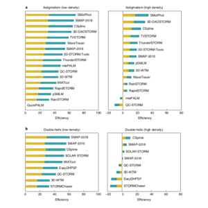
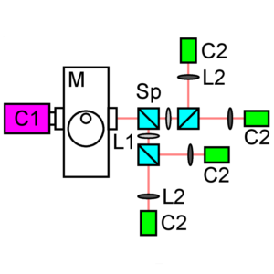
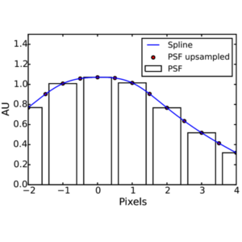
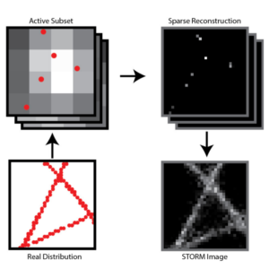
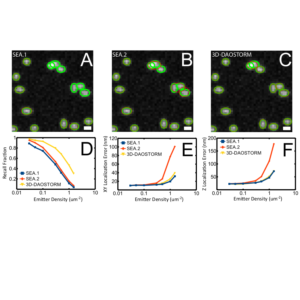
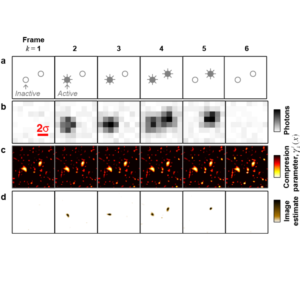

Our lab is in the Harvard University Center for Advanced Imaging. We primarily focus on technique and algorithm development for super-resolution fluorescence microscopy using the single molecule localization approach (SMLM).
Super-resolution fight club: assessment of 2D and 3D single-molecule localization microscopy software.
D. Sage, T-A. Pham, H. Babcock, T. Lukes, T. Pengo, J. Chao, R. Velmurugan, A. Herbert, A. Agrawal, S. Colabrese, A. Wheeler, A. Archetti, B. Rieger, R. Ober, G. M. Hagen, J-B. Sibarita, J. Ries, R. Henriques, M. Unser, S. Holden
387-395
(2019)

This paper compares the performance of a large number of SMLM analysis software packages on a variety of different simulated test data sets. The goal of this project was to provide a comprehensive assessment of existing SMLM analysis software and to identify possible areas for improvement.

This paper tests the use of inexpensive (~$1k) CMOS cameras for SMLM. We demonstrate that they perform almost as well as much more expensive scientific CMOS cameras for 2D single plane imaging. We demonstrate the use of these cameras for bi-plane and quad-plane 3D SMLM imaging. We demonstrate a new way to perform SR-STORM using these cameras. We also introduce open-source software for multi-camera data analysis and microscope control.

This paper describes modeling the microscope PSF with cubic splines. We demonstrate that cubic splines are an accurate, versatile and fast approach for analyzing SMLM movies.

This paper demonstrates that the L1-homotopy algorithm is significantly (10-100x) faster than the CVX algorithm at processing the images typically encountered in dense 2D SMLM movies. L1-H estimates a 2D super-resolution image from a SMLM movie.

This paper introduces the 3D-DAOSTORM algorithm. This is one of the first algorithms that can process 3D astigmatic SMLM movies containing partially overlapping emitters.

This paper introduces the DeconSTORM algorithm. The algorithm incorporates Poisson-distributed photon detection noise, the sparse spatial distribution of activated fluorophores, and temporal correlations between consecutive movie frames arising from intermittent fluorophore activation. DeconSTORM estimates a 2D super-resolution image from a SMLM movie.
.